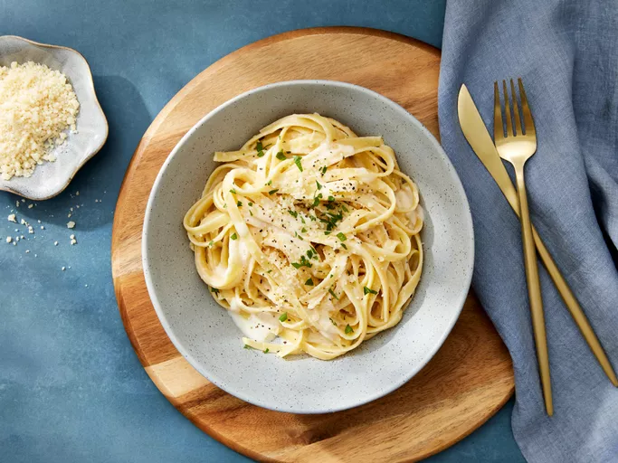

Fettuccine Alfredo Recipe

Description
This rich and creamy fettuccine Alfredo recipe is easy enough for beginner cooks, but it's impressive enough for company.
Ingredients:
- Pasta: Of course, you'll need fettuccine pasta.
- Butter: This Alfredo sauce starts with two sticks of butter.
- Cream: The rich sauce calls for almost a cup of heavy cream.
- Seasonings: The fettuccine Alfredo is simply seasoned with salt, pepper, and garlic salt.
- Cheeses: You'll need Romano and Parmesan cheeses.
How to Make Fettuccine Alfredo:
- Cook the pasta.
- Melt the butter and cream together on the stove, season, and stir in the cheese.
- Toss the pasta in the cheese sauce.